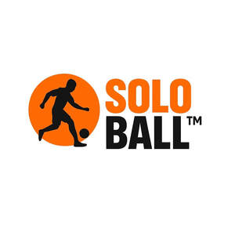

Trade Mark Journal No.2025/034 22 August 2025
UK00004248377 13 August 2025 (41)
Mark 1

Mark 2
- Class 41
- Organising of sports and sports events; Sports and fitness; Sports activities; Sports coaching; Organising of sports competitions and sports events; Organising of sports events and of sports competitions; Sports training; Training in sports; Sports club services; Competitions (Organization of sports -); Organization of sports competitions; Training of sports players; Organisation of sports events in the field of football; Organisation of sporting competitions and sports events; Hosting of fantasy sports leagues; Organisation of sports tournaments; Instruction in sports; Organisation of sports competitions; Sports coaching services; Providing facilities for sporting events, sports and athletic competitions and awards programmes; Providing sports news; Sports camp services; Organising of sports competitions; Competitions (Organising of sports -); Sports competitions (Organising of -); Providing sports facilities for skiing; Organization of electronic sports competitions; Providing online entertainment in the nature of fantasy sports leagues; Conducting of sports competitions; Providing sports facilities for playing polo; Sports facilities (Leasing of -); Providing facilities for sports tournaments; Sports education services; Organising of sports events; Online sports betting services; Conducting of sports events; Providing sports facilities for figure skating championships; Hire of sports facilities.
SOLOBALL HOLDINGS LTD